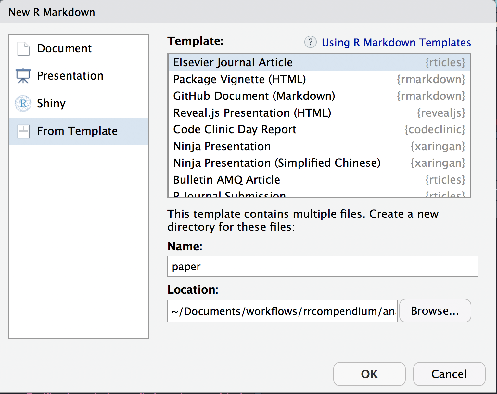
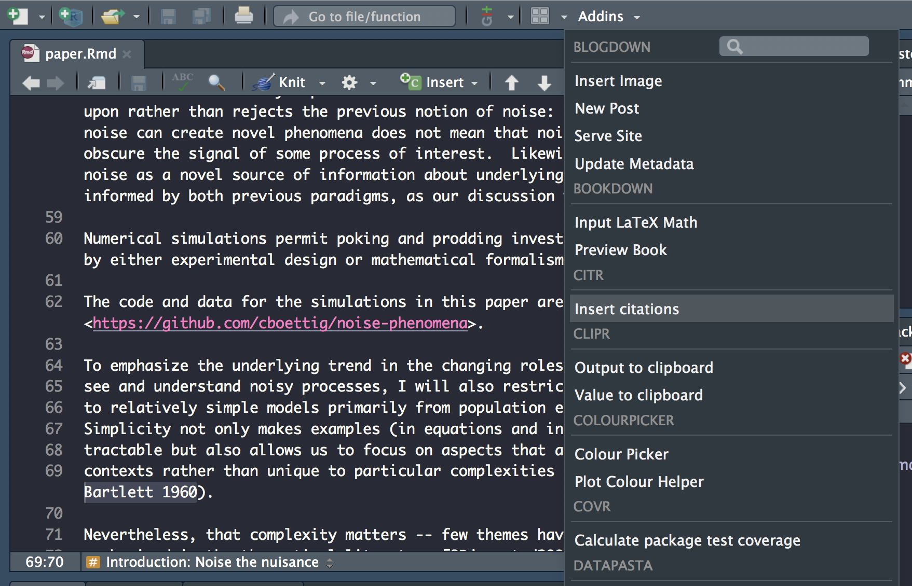
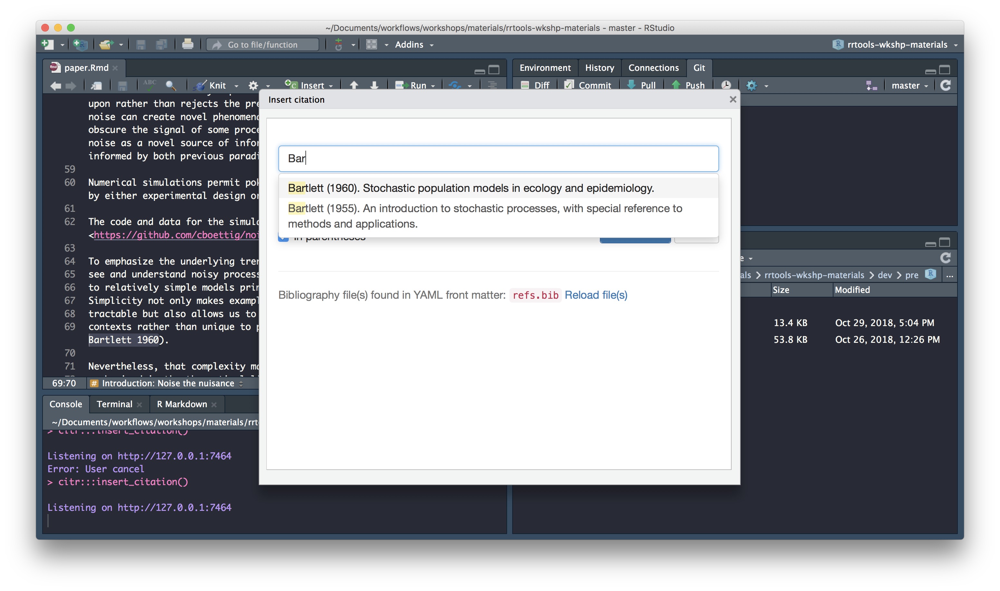
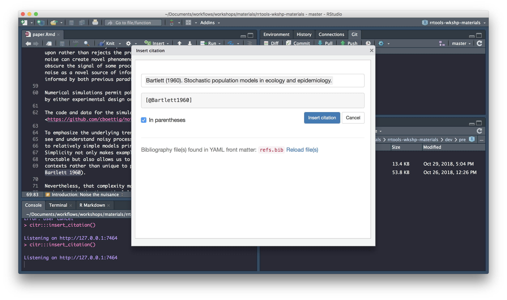
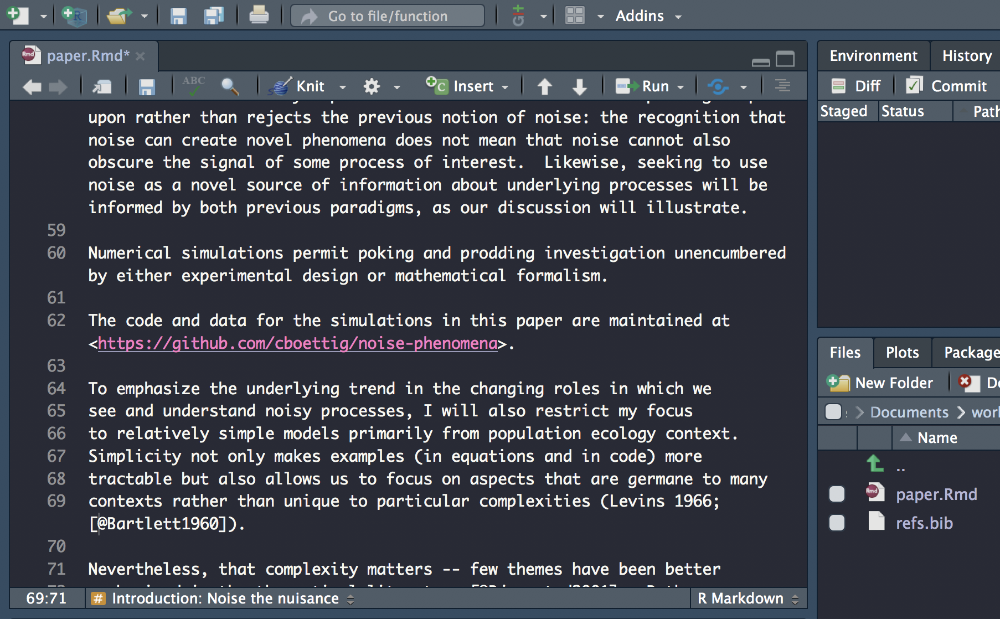

Last updated: 2018-10-30
workflowr checks: (Click a bullet for more information) ✔ R Markdown file: up-to-date
Great! Since the R Markdown file has been committed to the Git repository, you know the exact version of the code that produced these results.
✔ Environment: empty
Great job! The global environment was empty. Objects defined in the global environment can affect the analysis in your R Markdown file in unknown ways. For reproduciblity it’s best to always run the code in an empty environment.
✔ Seed:
set.seed(20181015)
The command set.seed(20181015) was run prior to running the code in the R Markdown file. Setting a seed ensures that any results that rely on randomness, e.g. subsampling or permutations, are reproducible.
✔ Session information: recorded
Great job! Recording the operating system, R version, and package versions is critical for reproducibility.
✔ Repository version: f7c3c51
wflow_publish or wflow_git_commit). workflowr only checks the R Markdown file, but you know if there are other scripts or data files that it depends on. Below is the status of the Git repository when the results were generated:
Ignored files:
Ignored: .DS_Store
Ignored: .Rhistory
Ignored: .Rproj.user/
Ignored: analysis/.DS_Store
Ignored: analysis/data/
Ignored: analysis/package.Rmd
Ignored: assets/
Ignored: docs/.DS_Store
Untracked files:
Untracked: docs/assets/Boettiger-2018-Ecology_Letters.pdf
Untracked: docs/assets/Packaging-Data-Analytical Work-Reproducibly-Using-R-and-Friends.pdf
Unstaged changes:
Modified: analysis/_site.yml
Modified: analysis/index.Rmd
| File | Version | Author | Date | Message |
|---|---|---|---|---|
| Rmd | f7c3c51 | annakrystalli | 2018-10-30 | commit final draft |
In this section we’re going to create a literate programming document to reproduce the paper in a format suitable for journal submission or as a pre-print. We’ll do this using the course materials we downloaded.
In particular, we’re going to combine the code in analysis.R, the text in paper.txt and the references in the refs.bib file in an .Rmd document to reproduce paper.pdf.
More information on working on academic journals with Bookdown
rticlesThe rticles package is designed to simplify the creation of documents that conform to submission standards. A suite of custom R Markdown templates for popular journals is provided by the package.
paper/ subdirectoryFirst, let’s delete the current analysis/paper folder as we’re going to create a new paper.Rmd template.
This particular paper was published in Ecology Letters, an Elsevier Journal. We can create a new paper.Rmd template from the templates provided by rticles package.
We can use the New R Markdown dialog
Select:
~/Documents/workflows/rrcompendium/analysis
Or we can use rmarkdown::draft() to create articles:
Both these functions create the following files in a new directory analysis/paper.
analysis/paper
├── elsarticle.cls
├── mybibfile.bib
├── numcompress.sty
└── paper.RmdThe elsarticle.cls contains contains the citation language style for the references.
The mybibfile.bib contains an example reference list.
The new paper.Rmd is the file we will be working in.
Let’s open it up and start editing it.
The YAML header in Paper.Rmd contains document wide metadata and is pre-populated with some fields relevant to an academic publication.
---
title: Short Paper
author:
- name: Alice Anonymous
email: alice@example.com
affiliation: Some Institute of Technology
footnote: Corresponding Author
- name: Bob Security
email: bob@example.com
affiliation: Another University
address:
- code: Some Institute of Technology
address: Department, Street, City, State, Zip
- code: Another University
address: Department, Street, City, State, Zip
abstract: |
This is the abstract.
It consists of two paragraphs.
journal: "An awesome journal"
date: "2018-10-30"
bibliography: mybibfile.bib
output: rticles::elsevier_article
---Here we’re going to reproduce paper.pdf as is, so we’ll actually be editing the file with details from the original publication.
First, let’s clear all text BELOW the YAML header (which is delimited by ---. DO NOT delete the YAML header).
Next, let’s open paper.txt from the course material which contains all text from the in paper.pdf. We can use it to complete some of the fields in the YAML header.
Add the paper title to this field
title: "From noise to knowledge: how randomness generates novel phenomena and reveals information"
Here we specify the addresses associated with the affiliations specified in authors
address:
- code: a
address: "Dept of Environmental Science, Policy, and Management, University of California Berkeley, Berkeley CA 94720-3114, USA"Note that the field code in address cross-references with the affiliations specified in author.
Before specifying the bibliography, we need to copy the refs.bib file associated with paper.pdf from the course materials and save it in our analysis/paper subdirectory.
Next we can set the refs.bib as the source for our paper’s bibliograpraphy:
bibliography: refs.bibWe can add an additional field called layout which specifies the layout of the output and takes the following values.
Let’s use singlespace margins
layout: 3pWe can add also an additional field called preamble. This allows us to include LaTeX packages and functions. We’ll use the following to add linenumbers and doublespacing.
preamble: |
\usepackage[nomarkers]{endfloat}
\linenumbers
\usepackage{setspace}
\doublespacingThis field should contain the abstract
abstract: |
# Abstract
Noise, as the term itself suggests, is most often seen a nuisance to ecological insight, a inconvenient reality that must be acknowledged, a haystack that must be stripped away to reveal the processes of interest underneath. Yet despite this well-earned reputation, noise is often interesting in its own right: noise can induce novel phenomena that could not be understood from some underlying determinstic model alone. Nor is all noise the same, and close examination of differences in frequency, color or magnitude can reveal insights that would otherwise be inaccessible. Yet with each aspect of stochasticity leading to some new or unexpected behavior, the time is right to move beyond the familiar refrain of "everything is important" (Bjørnstad & Grenfell 2001). Stochastic phenomena can suggest new ways of inferring process from pattern, and thus spark more dialog between theory and empirical perspectives that best advances the field as a whole. I highlight a few compelling examples, while observing that the study of stochastic phenomena are only beginning to make this translation into empirical inference. There are rich opportunities at this interface in the years ahead.
The output format. In this case, the template is correctly pre-populated with rticles::elsevier_article so no need to edit.
output: rticles::elsevier_articleNow let’s add the main body of the paper from paper.txt.
First, let’s a add a new page after the abstract using:
\newpage
paper.txtWe do not need the details we’ve just completed the YAML with, so ignore the title, abstract etc and just copy everything in paper.txt from the Introduction header down to and including the reference section header.
# Introduction: Noise the nuisance
To many, stochasticity, or more simply, noise,
is just that -- something which obscures patterns we are
...
...
...
...
...
# Acknowledgements
The author acknowledges feedback and advice from the editor,
Tim Coulson and two anonymous reviewers. This work was supported in
part by USDA National Institute of Food and Agriculture, Hatch
project CA-B-INS-0162-H.
# References
Let’s knit our document and have our first look at the resulting pdf by clicking on the Knit tab.
Next we’ll replace the flat citations in the text with real linked citation which can be used to auto-generate formatted inline citations and the references section.
We’ll use the citr package, which provides functions and an RStudio addin to search a BibTeX-file to create and insert formatted Markdown citations into the current document.
Once citr is installed and you have restarted your R session, the addin appears in the addin menu. The addin will automatically look up the Bib(La)TeX-file(s) specified in the YAML front matter.
Select text to replace with a citation
Launch citr addin: 
Search for citation to insert 
Select citation to insert 
Insert citation 
Carry on updating the rest of the citations. Don’t forget to check the abstract for citations!
For the sake of time today, and not to open this topic too deeply here, I’ve included the following LaTex equation syntax in the text:
\begin{align}
\frac{\mathrm{d} n}{\mathrm{d} t} = \underbrace{c n \left(1 - \frac{n}{N}\right)}_{\textrm{birth}} - \underbrace{e n}_{\textrm{death}}, \label{levins}
\end{align}that generates equation 1 in the paper.pdf.
\[\begin{align} \frac{\mathrm{d} n}{\mathrm{d} t} = \underbrace{c n \left(1 - \frac{n}{N}\right)}_{\textrm{birth}} - \underbrace{e n}_{\textrm{death}}, \label{levins} \end{align}\]
So you don’t need to edit anything here.
Check Math expressions and Markdown extensions by bookdown for more information.
Inline LaTeX equations and parameters can be written between a pair of dollar signs using the LaTeX syntax, e.g., $f(x) = 1/x$ generates \(f(x) = 1/x\).
Using paper.pdf to identify mathematical expressions in the text (generally they appear in italic), edit your paper.Rmd, enclosing them between dollar signs.
Let’s knit our document to check our references and maths annotations have been updated correctly by clicking on the Knit tab.
Now that we’ve set up the text for our paper, let’s insert the code to generate figure 1.
libraries chunkFirst let’s insert a libraries code chunk right at the top of the document to set up our analysis. Because it’s a setup chunk we set include = F which suppresses all output resulting from chunk evaluation.
```{r libraries, include=FALSE}
```Now, let’s set some knitr options for the whole document by adding the following code to our libraries chunk:
knitr::opts_chunk$set(echo = FALSE, message=FALSE, warning=FALSE,
dev="cairo_pdf", fig.width=7, fig.height=3.5)We’re setting default chunk options to:
echo = FALSEmessage = FALSEwarning = FALSEto suppress code, warnings and messages in the output, and
dev="cairo_pdf"fig.width=7fig.height=3.5to specify how figures will appear.
Copy and paste the code for loading all the libraries from analysis.R. Add library rrcompendium so we can access function recode_system_size. The libraries chunk should now look like so:
knitr::opts_chunk$set(echo = FALSE, message=FALSE, warning=FALSE,
dev="cairo_pdf", fig.width=7, fig.height=3.5)
library(dplyr)
library(readr)
library(ggplot2)
library(ggthemes)
library(rrcompendium)set-theme chunkRight below the libraries chunk, insert a new chunk and call it set-theme
Copy the code to set the plot theme and pasted into the set-theme code:
figure1 chunkNow scroll down towards the bottom of the document and create a new chunk just above the Conclusions section. Call it figure1
Copy and paste the remaining code into a new chunk which will create figure 1.
# create colour palette
colours <- ptol_pal()(2)
# load-data
data <- read_csv(here::here("gillespie.csv"), col_types = "cdiddd")
# recode-data
data <- data %>%
mutate(system_size = recode(system_size, large = "A. 1000 total sites", small= "B. 100 total sites"))
# plot-gillespie
data %>%
ggplot(aes(x = time)) +
geom_hline(aes(yintercept = mean), lty=2, col=colours[2]) +
geom_hline(aes(yintercept = minus_sd), lty=2, col=colours[2]) +
geom_hline(aes(yintercept = plus_sd), lty=2, col=colours[2]) +
geom_line(aes(y = n), col=colours[1]) +
facet_wrap(~system_size, scales = "free_y") Edit the code to
update the path to gillespie.csv
streamline the code to a single pipe to include recode_system_size
read_csv(here::here("analysis", "data","raw_data", "gillespie.csv"),
col_types = "cdiddd") %>%
# recode-data
recode_system_size() %>%
# plot-gillespie
ggplot(aes(x = time)) +
geom_hline(aes(yintercept = mean), lty=2, col=colours[2]) +
geom_hline(aes(yintercept = minus_sd), lty=2, col=colours[2]) +
geom_hline(aes(yintercept = plus_sd), lty=2, col=colours[2]) +
geom_line(aes(y = n), col=colours[1]) +
facet_wrap(~system_size, scales = "free_y") Finally, let’s update chunk figure1 to include a figure caption. The text for the caption is at the bottom of paper.txt. We can include it in the chunk header through chunk option fig.cap like so:
```{r figure1, figure1, fig.cap="Population dynamics from a Gillespie simulation of the Levins model with large (N=1000, panel A) and small (N=100, panel B) number of sites (blue) show relatively weaker effects of demographic noise in the bigger system. Models are otherwise identical, with e = 0.2 and c = 1 (code in appendix A). Theoretical predictions for mean and plus/minus one standard deviation shown in horizontal re dashed lines."} ```Let’s check our final work by re-knitting to pdf. You should be looking at something that looks a lot like paper.pdf
Finally, before we’re finished, let’s ensure the additional dependencies introduced in the paper are included. We can use rrtools::add_dependencies_to_description()
This function scans script files (.R, .Rmd, .Rnw, .Rpres, etc.) for external package dependencies indicated by library(), require() or :: and adds those packages to the Imports field in the package DESCRIPTION:
Imports:
bookdown,
dplyr,
ggplot2 (>= 3.0.0),
ggthemes (>= 3.5.0),
here (>= 0.1),
knitr (>= 1.20),
rticles (>= 0.6)
This reproducible R Markdown analysis was created with workflowr 1.1.1